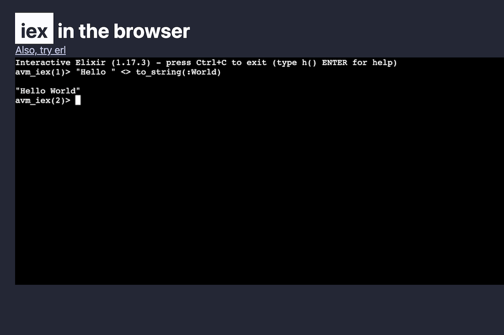
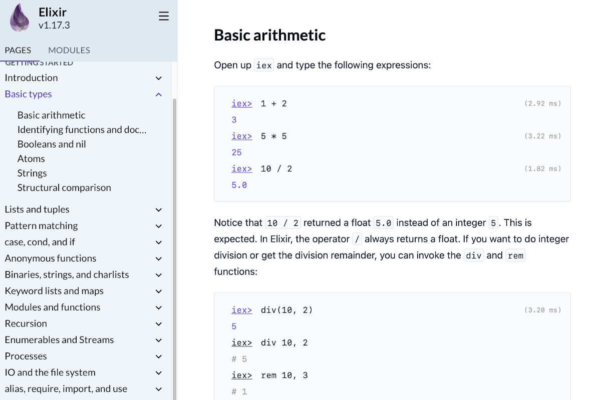
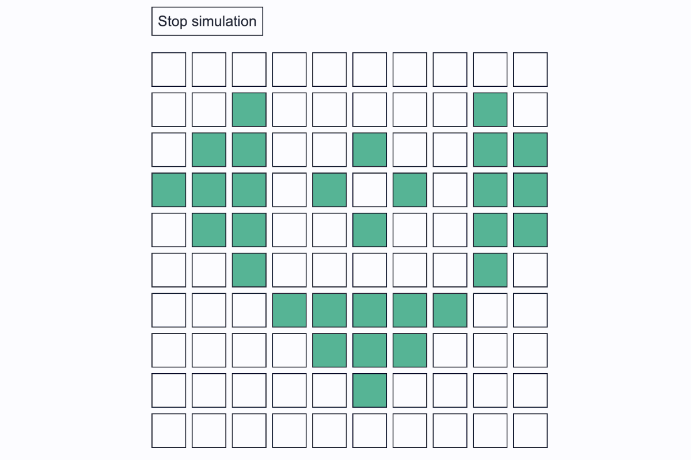
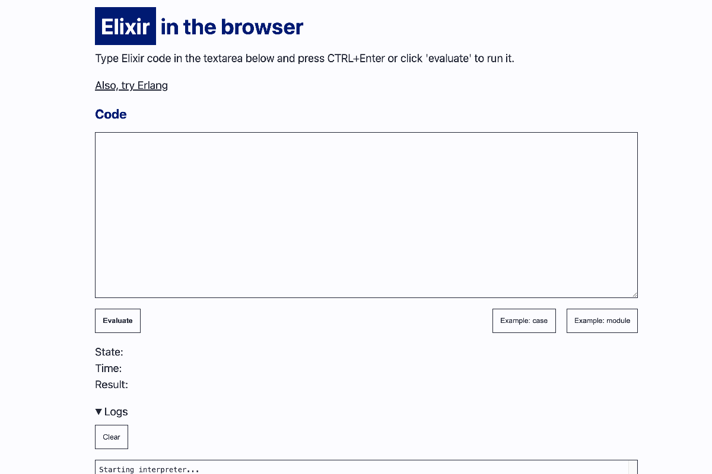

Popcorn
is a library that enables execution of Elixir code within
web browsers.
Compiled Elixir code is executed in the client-side
AtomVM
runtime. Popcorn offers APIs for interactions between Elixir
and JavaScript, handling serialization and communication, as
well as ensuring browser responsiveness.
We prepared three live examples using Popcorn, check them
out!
You will find Popcorn API in
"API" section and read how it all works
in "Under the hood" section.

IEX WASM,
an elixir REPL in WASM.

Elixir docs
"Getting started" guide with interactive snippets.

Game of life, representing
every cell as a process.

A simple Elixir Evaluator,
compiling code dynamically in WASM.
Getting started
Note
This library is work in progress. API is unstable and
some things don't work. You can read more in
"Limitations"
section.
Popcorn connects your JS and Elixir code by sending messages
and directly executing JS from Elixir. To do that, you need
to setup both JS and Elixir.
Add Popcorn as a dependency in your
mix.exs – {:popcorn, "~> 0.1"} and
run mix deps.get. After that, setup JS and
Elixir WASM entrypoint.
JS
First, generate a directory that will host Popcorn JS
library, WASM, and generated app bundle. To do that, run:
Next, in your main html you need to include the library and
code that sets up communication channels with Elixir. Add
those scripts at the end of the body element in
HTML.
A WASM entrypoint is any Elixir module with
start/0 function that never exits. If you are
using supervision tree, you can write it as follows:
Entrypoint snippet
# lib/app/application.ex
defmodule App.Application do
use Application
alias Popcorn.Wasm
@receiver_name :main
# entrypoint
def start do
{:ok, _pid} = start(:normal, [])
Wasm.send_elixir_ready(default_receiver: @receiver_name)
Process.sleep(:infinity)
end
@impl true
def start(_type, _args) do
# Create default receiver process and register it under `@receiver_name`
# ...
end
end
After we finish initializing Elixir (setting up supervision
trees, etc), we notify JS side by calling
Wasm.send_elixir_ready/1. For convenience, we
also pass name of the default receiver process. JS will send
messages to it if no other process name is specified.
At this point, your application is ready to exchange
messages between JS and Elixir. Next, we will implement
Elixir GenServer that will process JS messages and interact
with DOM.
Elixir receiver process
This is a process that will receive messages originating
from JS. See the "API" section for
details on how to receive messages to JS and how to call JS
code.
API
JS
Main component is the Popcorn class that
manages the WASM module and sends messages to it.
To create an instance, use
Popcorn.init(options) static
method. Options:
onStdout ((text: string) => void) – a
function that receives any text from standard
output. Defaults to no-op function.
onStderr ((text: string) => void) – a
function that receives any text from standard error.
Defaults to no-op function.
container (DOMElement) – a DOM element
that iframe should be mounted at. Read more in
"Under the hood"
section. Defaults to document.body.
bundlePath (string) – a path to the
compiled Elixir
code bundle. Defaults to
static/wasm/app.avm.
heartbeatTimeoutMs (number) – a time
limit set for iframe to send heartbeat message. Read
more in
"Under the hood"
section. Defaults to 15s.
debug (boolean) – an option to enable
internal logs used to debug the library. Defaults to
false.
Methods used to interact with Elixir from JS:
async call(args, options)
– takes a serializable value in JS, sends a message to
registered Elixir process, and waits for Elixir code to
settle the promise. Options:
process (string) – name of the
process that will receive the message. Defaults
to the process name set in
Wasm.send_elixir_ready/1 call.
timeoutMs (number) – a time limit
set for Elixir to settle the promise. After that
time promise is automatically rejected. Defaults
to 5s.
cast(args, options) –
takes a serializable value in JS and sends a message to
registered Elixir process. Options:
process (string) – name of the
process that will receive the message. Defaults
to the process name set in
Wasm.send_elixir_ready/1 call.
To destroy an instance, use
popcorn.deinit() method.
Elixir
Main component is the Popcorn.Wasm module that
handles communication with JS.
send_elixir_ready(opts)
– a function that notifies JS that Elixir finished
initialization. Opts:
default_receiver (string or atom) –
sets the default receiver for JS calls and
casts. Optional.
is_wasm_message(raw_message)
– a guard that returns true if argument is a raw message
received from JS.
handle_message!(raw_message, handler)
– parses raw message received from JS and dispatches it
to
handler.
For :wasm_call,
handler should return
{promise_status, promise_value, result}
tuple, where:
promise_status is either
:resolve or :reject,
promise_value is any serializable
value that JS should receive in response,
result is any value passed back to
the caller.
Popcorn resolves the JS promise with it, finishing
the call.
For :wasm_cast message, it should
return only result.
run_js(js_function, opts)
– Executes JS function in the iframe context and
returns a map containing reference to JS object
(RemoteObject
struct).
The JS function takes an object and returns any
value. The object contains:
bindings – an object with
serializable values passed from Elixir in
bindings option.
window – a JS
window bound to main browser
context. Used for DOM manipulation.
Value returned from JS function will be returned to
Elixir in form of RemoteObject. If
returned value is serializable, it can be retrieved
in Elixir by using return option
described below. Opts:
bindings – a map of serializable
Elixir values that will be passed to JS
function. Defaults to %{}.
return (list) – if
:value is included in the list,
run_js/2 will additionally include
serializable JS value in returned map. Defaults
to [:ref].
selector (string) – a selector for
DOM element that listener will attach to.
target (atom or string) – a name of
the process that will receive the events.
event_keys (list) – a list
containing atom names of event object. The
specified keys will be included in the message.
unregister_event_listener(ref)
– unregisters event listener referenced by
ref.
parse_message!(raw_message)
– a low level function that parses JS message.
resolve(term, promise)
– a low level function that resolves JS
promise with serializable
term.
resolve(term, promise)
– a low level function that rejects JS
promise with serializable
term.
Limitations
We rely on AtomVM for running the compiled beams. It's a
runtime designed for microcontrollers and it doesn't entire
OTP. Most notably, some natively implemented functions
(NIFs) from OTP standard library are missing.
We provide patches, reimplementing some in Erlang and work
on adding important NIFs directly to AtomVM. Nevertheless,
some modules (e.g. :timer, full
:ets selects – core Elixir code depend on them)
won't work just yet.
Aside of parts of standard library, AtomVM doesn't support
big integers and bitstring well. There's ongoing work to
support both of those.
Popcorn provides set of functions that work with JS. Not all
values can be sent to either JS or Elixir. Working with
those values is based on passing opaque references to them.
API is not stabilized yet but we mostly want to keep the
current form for JS and slightly improve developer
experience for Elixir parts.
Under the hood
Overall architecture
To run Elixir on the web, you need to compile Erlang/Elixir
runtime to WASM and load the compiled Elixir bytecode. We
use
AtomVM
runtime. It is compiled via Emscripten and loaded in iframe
to isolate main window context from crashes and freezes. The
runtime then loads user's code bundle with
.avm extension. The bundle is a file consisting
of concatenated .beam files.
This flow guides the architecture – main window creates an
iframe and communicates with it via
postMessage(). Script in the iframe loads WASM
module and code bundle. The WASM module initializes the
runtime on multiple webworkers. Main window sets up the
timeouts which trigger if call() takes too long
or if iframe doesn't respond in time (most likely crashed or
got stuck on long computation).
When initializing WASM module, the script in iframe also
waits for a message from Elixir. This ensures we can't send
messages to Elixir before we can process them.
Patching
In order to use Elixir and Erlang standard library, we use
custom patching mechanism. It takes .beams from
known version of Erlang and Elixir, optionally patching them
with our changes. This allows for overriding behavior
(working around missing functionality in AtomVM) and adding
modules such as :emscripten to standard
library. This mechanism is currently not exposed to end
users.
Elixir and JS communication
JS calls and casts are extensions for WASM platform in
AtomVM. Both allows sending messages with string or number
data to named processes. call() additionally
creates a promise that Elixir code needs to resolve to
complete the request.
Popcorn builds on this mechanism to allow sending any
structured data. We use JSON as serialization strategy.
For Elixir communication with JS, we use Emscripten API to
make a JS call in the iframe JS context. Any scheduler on
worker thread can queue a JS call to be executed on main
browser thread. We expose a function that takes JS function
as a string and return any value. This value is persisted in
global map in JS under unique key and function returns a
reference to the key. If Elixir loses this reference, the
value is removed from the JS map.
If value returned from JS function is serializable, you can
use return: :value option to send the value
back to the Elixir.
About
Popcorn is created by Software Mansion.
Since 2012
Software Mansion is a
software agency with experience in building web and mobile
apps as well as complex multimedia solutions. We are Core
React Native Contributors and experts in live streaming and
broadcasting technologies. We can help you build your next
dream product –
Hire us.